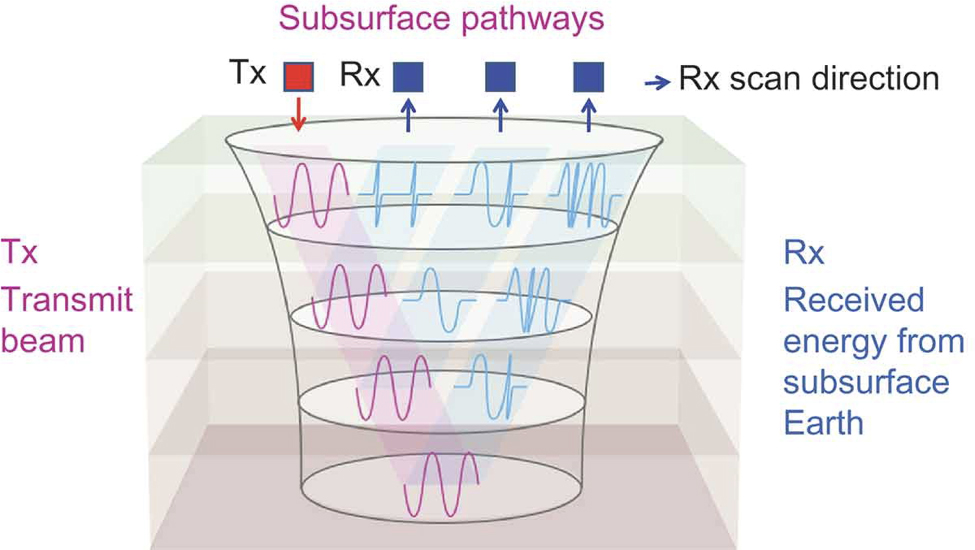

1. Introduction
The development of atomic dielectric resonance (ADR) by Dr G. Colin Stove was inspired by his experiences of working with synthetic aperture radar (SAR) sensors, from both satellites (ERS1 and RADARSAT) and from the Space Shuttle Imaging Radar-B experiment in the early 1980s, as well as his work with conventional ground penetrating radar (GPR) systems. ADR was developed as an improvement over SAR and GPR to achieve deeper penetration of the earth’s subsurface, through the creation and use of a novel type of coherent beam. ADR is used as a geophysical technique to provide a precision instrument for the accurate geological recognition of rock layers and identification of rock types by transmission through the rock medium as well as reflection from each subsurface rock layer.
The aim of this poster presentation is to report on tests of the subsurface earth penetration capabilities of a new spectrometer as well as its ability to recognise thin coal layers and many sedimentary, igneous and metamorphic rock types in real world conditions.
2. Methodology
2.1 Description of the ADR System
ADR is a patented investigative technique (Stove 2005) that involves the measurement and interpretation of resonant energy responses of natural or synthetic materials to the interaction of pulsed electromagnetic radio waves or microwaves from materials which permit the applied energy to pass through the material. The resonant energy response can be measured in terms of energy, frequency, and phase relationships. The precision with which the process can be measured helps define the unique interactive atomic or molecular response behaviour of any specific material, according to the energy bandwidth used. ADR is measurable on a very wide range of hierarchical scales both in time and space. Time scales may range from seconds to femtoseconds, and spatial scales from metres to nanometres.
 Figure 1. The ADR scanner beam transmit and receive pathways through geological layers when one of the sensors is stationary and the other is moved progressively away at a regular speed.With reference to Figure 1, the wide-angle reflection and refraction (WARR) tracking method is used to:
- identify the upper and lower boundaries of each stratum
- determine the inter-layer beam velocity and mean dielectric constant (ϵ) of the material in each stratum
- identify the materials in the various strata from both the ϵs, known as molecular or atomic spectral lines (after fast Fourier transform (FFT) analysis of the received signals) and spectral ADR statistical parameters data based on known rock types
ADR accurately measures the dielectric permittivity of materials encountered and determines the ϵ of each layer of rock to an accuracy of at least 1:400.With deeper penetration and a narrower ADR beam, the accuracy of dielectric mapping improves, and at 1 km depth, an accuracy of 1:4000 can be achieved for the mean dielectrics of narrow layers at this depth. The ϵ is basically the effect that a given material has on slowing down the ADR transmission signal. Determining the ϵ of each layer enables each rock layer to be mapped with a depth computation from ground level and can also determine physical properties of the rock layer, such as moisture content, porosity, and density indices. In general, dielectric values for hydrocarbon layers in the Earth tend to be between 2 and 5 for the author's ADR scanner, if water is absent. In geological terms, the main effect on the signal's velocity as it propagates through the material is the water content. For example, air has a ϵ of 1, while water has a ϵ of 80. Most geological materials lie within these boundaries.
Figure 2 shows the typical shape of an ADR transmit pulse into the Earth and the received energy from the Earth. Figure 3 displays photographs of the ADR equipment.
Figure 2. Examples of a typical ADR transmit pulse and receive signal. Figure 3. The ADR scanner equipment.2.2. Producing the ADR beam for remote sensing
ADR transmitting antennas are optically designed using dielectric lenses and can be referred to as behaving like radio wave and microwave telescopes. In the ADR transmitting telescopes, the dielectric lens sequences amplify the pulsed waves, but the optical feedback provided by lasing in the telescope chamber converts the system into an oscillator and then into a coherent, invisible light generator. (By invisible light, we mean frequencies within the radio wave and microwave spectrum.)
An ADR beam transmitted through the ground is a pulsed, confocal beam (like a long, narrow inverted cone in shape) of coherent (in-phase) radio waves and microwaves, producing minimal dispersion through its confocal and resonant mased nature. The transmitted ADR beams have two components: a long wavefront standing wave to achieve deep penetration and shorter resonance waves within the standing wave to enhance vertical resolution. The transmitted ADR beams typically operate within the frequency range of 1 – 100MHz.
2.3. ADR receiving system
The ADR transmitters must be oriented in the same direction as the receiving antennas. The receiving antenna (Rx) is kept vertical pointing into the ground at 90° look angle and the transmitting antenna (Tx) is thus moved away from Rx along the x-direction looking at 90° into the ground. The increasing beam dispersion through ray path move-outs can be computed and the increasing cylindrical beam widths are computed and plotted as the X-separation distance increases. By simple triangulation, the changing beam velocities through rock layers of differing dielectrics (ϵ) can be computed by normal move-out (NMO) mathematics and ray tracing theory (after Snell's law). Since the transmitting beam set-up is lased in the cylindrical chamber of the transmitting telescope and the speed of the lased beam is slowed down by special dielectric optics in the chamber, the resulting beam dispersion going down through the ground becomes slightly narrower with depth. This arrangement is called confocal focusing at rock layers and is ideal for mapping geological layers of varying ϵs, in each case plotting the exact rock volume illuminated between layer-bounded beam limits.
2.4. Processing and interpretation of the received ADR signals
The analysis of the returned ADR signals from the subsurface to the ADR receiving system is performed by FFT analysis of the received spectrum (which includes radio waves and microwaves). This results in mathematical and statistical analyses of the received spectrum and the recognition of energy, frequency, and phase relationships.
More detailed spectrometric analysis is achieved through the quantum electrodynamic (QED) approach (Feynman 1985) by quantizing the entire ADR receive spectrum. In ADR quantum theory, this is similar to the equal temperament system of tuning musical instruments – in which each pair of adjacent musical notes has an identical frequency ratio. In this tuning methodology, an interval (usually an octave) is divided into a series of equal steps, with equal frequency ratios between successive notes. For example, a violin is tuned in perfect fifths. The notes are G–D–A–E, where the fundamental G is 192 Hz, D is 288 Hz, A is 432 Hz, and E is 648 Hz. Note that a perfect fifth is in a 3:2 relationship with its base tone. The octave frequency interval is covered in seven steps (A, B, C, D, E, F, and G) and each tone is the ratio of the seventh root of 3/2, or in mathematical form ((3/2)1/7). For ADR, the quantized frequency spectrum includes 3 octaves of the radio wave spectrum and 33 octaves of the microwave spectrum. When ADR is applied to geological analysis, rocks can be genetically classified by notes and octaves using the above spectrometric approach – adding a new quantum dimension to recording rock music.
2.5 Study Area
- Working with BG Group to develop a reliable coal bed methane exploration and appraisal survey tool based on Adrok’s technology
- Survey Area located onshore United Kingdom
- Adrok trained on 4 drilled well locations (for coal signatures and for sedimentary rock & Igneous rock layer signatures)
- Surface terrain comprised low lying farmland. Survey sites on pads.
- Carboniferous marine sequences
- BG Group is interested in dielectrics as a new measurement to help their subsurface interpretations for tracking coal beds
- The results of the Adrok survey were compared to the actual drilling results (Adrok presented results before drilling commenced).
3. Results
3. 1 Dielectrics
Dielectric profiles were produced for each site and compared to drilled well measurements. Typical Dielectric values measured by ADR:
- Air: 1
- Basalt: 8
- Wet clay altered zones: 12 – 30+
- Sandstone: 5 – 7
- Coal: 2 - 5
- Shale: 4 – 9
- Brine: 81
3.2 BG Group’s Conclusions – Dielectric Profiles at Well-sites
-
“ What is being measured?
- Adrok Dielectric responses
- Coal has low dielectric < 3
- Water has high dielectric 80-81
- Calcite has high dielectric 8
-
Depth control
- seems good +/- 10 feet
-
Coal beds
- prediction is possible and semi-reliable
- high dielectric – water filled?
- low dielectric- tight? gassy?
-
Volcanics
- high dielectric suggesting its presence at a particular depth
-
Shale Gas beds
- Low dielectric suggests there is organic material in the Black Metal Shales
4. Conclusions
This poster has reported the subsurface Earth penetration capabilities of a deep-penetrating field spectrometer, known as ADR. Furthermore, the article has demonstrated the ability of ADR to recognize certain lithologic types (mainly coals) in real-world conditions.
The ADR scanner works by sending a narrow beam of energy into the ground using microwaves and radio waves. As it travels downward, the energy character of the beam is altered by the various rock layers it encounters. The beam is continually reflected back by these same rock layers and is recorded at surface.
The recorded data quantify how rocks and minerals, including hydrocarbons, interact with the beam as it passes through them and pinpoints their composition. The technology measures the dielectric permittivity of the subsurface as well as characterizing the nature of the rock types based on analysis of both the spectroscopic and resonant energy responses.
A key driver in pursuing development of ADR technology is to reduce the number of drill holes required to delineate a subsurface mineral or hydrocarbon reserve. To do this, laboratory analyses of rock specimens and data from training holes are used to guide the interpretation and analyses of the ADR results. As more samples are entered into Adrok's proprietary library, the confidence in the results will increase.
Another benefit to this approach is that ADR requires no land-use permitting as use of the technology offers a non-destructive, environmentally friendly way of remotely deducing subsurface geology.
Since 2007, this ADR methodology has been successfully deployed as a geophysical service by Adrok in the exploration and appraisal of subsurface geological structures and targets (platinum group metals, zinc, nickel, copper, massive sulphides, uranium, and hydrocarbon deposits).
Further research and testing of the ADR system is being conducted to test the depth limits to which the ADR can penetrate as well as its reliability and repeatability of material classification (spectroscopic capabilities).